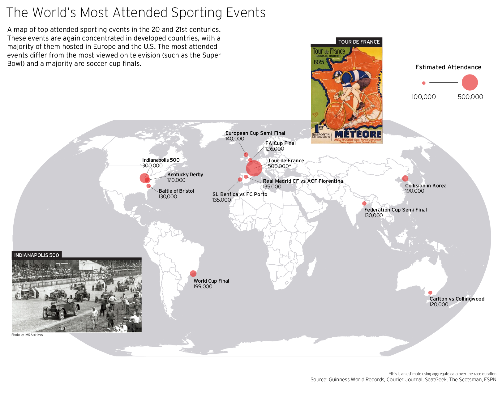
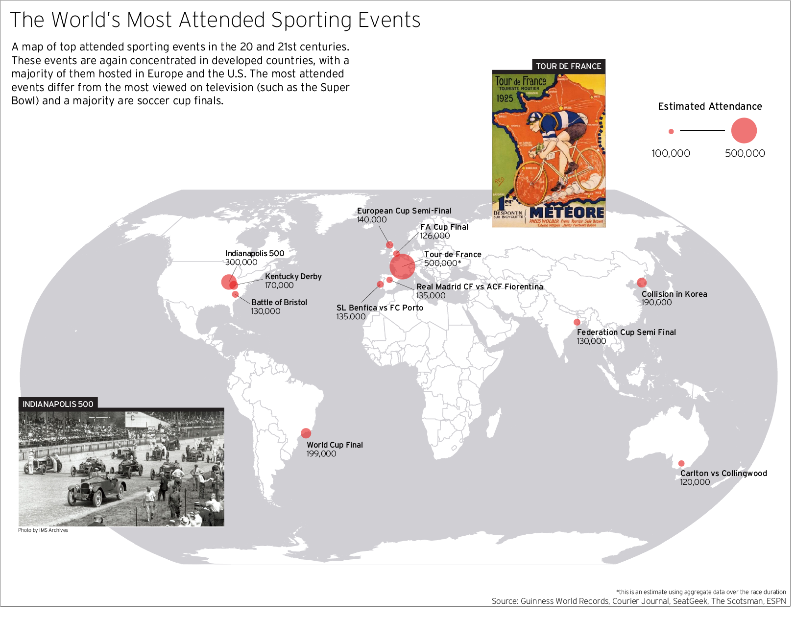
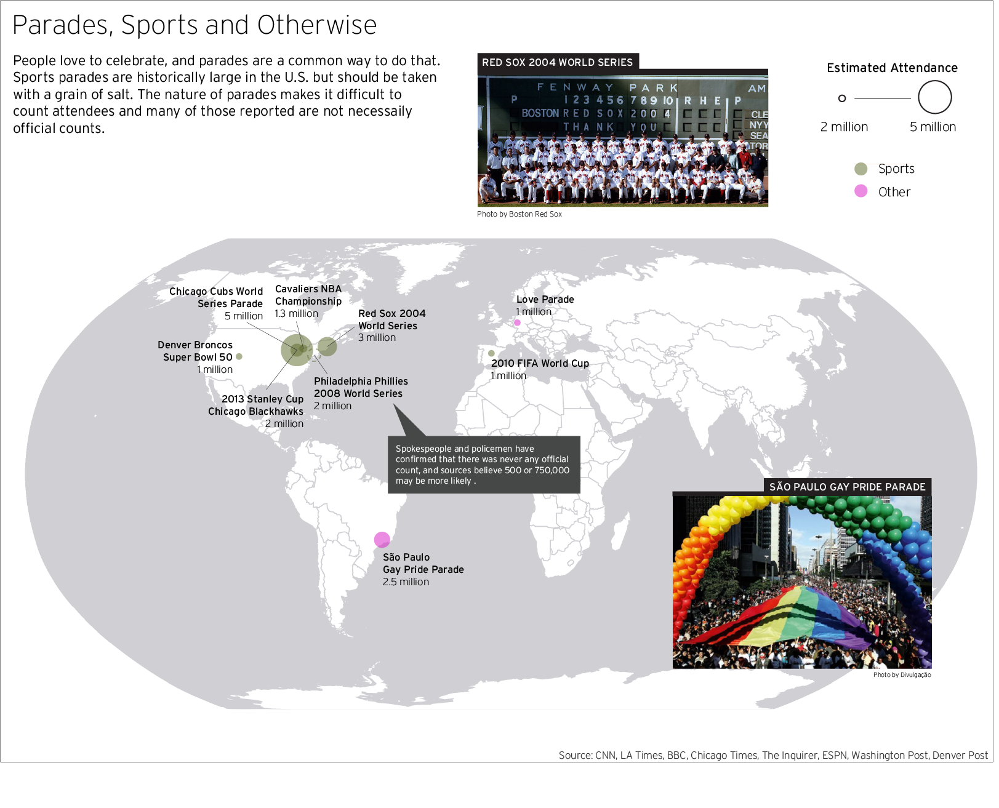
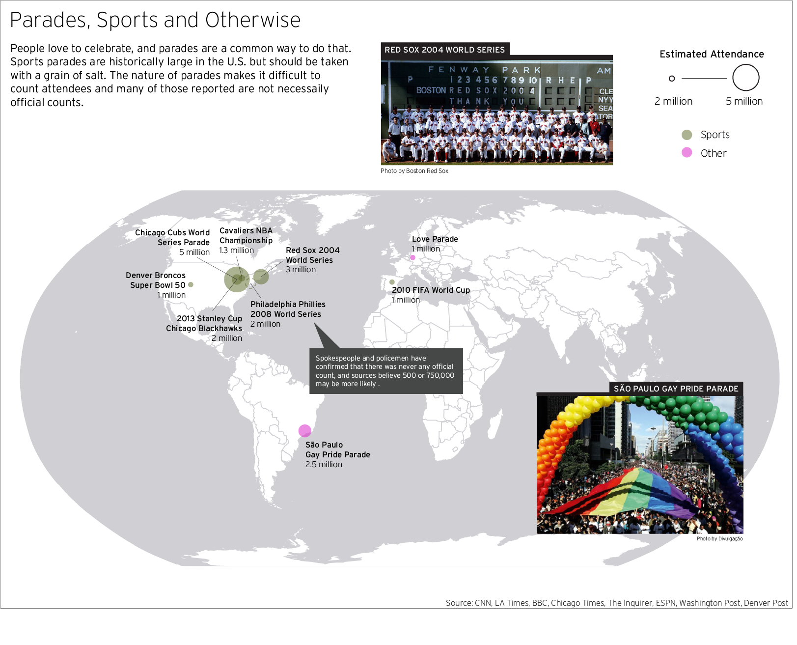

The World's Largest Gatherings

What causes humans to gather in large quantities? And where do these gatherings take place? The largest human gatherings in history can be grouped into five categories: religious events, celebrations of death or birth, concerts and festivals, sporting events, and political events. All of these events are connected by a common thread: they all invoke a sense of spirituality and community. Whether attendees are vehemently opposing terrorism in Paris, cheering on the Chicago Cubs in Illinois, or bathing with 20 million others in the Ganges, they are experiencing a deep form of human connection and simulation that undoubtedly invigorates and overwhelms.
For many of these gatherings people travel nationally or internationally. They may be the sole vacation that they plan for each year. For some, this could be the pilgrimage they have saved for over years or decades. Religious pilgrimages may be in memory of a loved one who has died or to celebrate a new birth. All of these events hold significant meaning in the lives of those attending and speak to the causes that humans are most passionate about. Therefore, this project is a broad summary of what brings passion to people’s lives and where different passions are concentrated.

UX Challenges:
The data for this project was far from ideal. An intrinsic quality of large crowds is that they are hard to quantify. Multiply this by multiple days for some events and the data gets messy. Political events are even less reliable and more predictable: they are often over-exaggerated to fit ulterior political motives. These may include inflating or deflating apparent support for a cause/party or promoting nationalism. Many events reoccur annually, and inevitably different events occur in the same city.
UX Solutions:
To maintain data integrity, I tried to use journals or other recognizable publications when possible, or Guinness World Records (and cited sources at the bottom of each map). For events that reoccur annually, only the most populous data was used. Events were limited to the 20th and 21st centuries. Events with unreliable sources or data were noted. Also noted were exceptional and known exaggerations. Some events (such as Khumb Mela or the Tour de France) take course over multiple days whereas others are single day events – judgement was made on an individual case to include or exclude based on accuracy of data.
 

What trends are visible in these maps? Religious and funeral events are heavily concentrated in countries where religion is fundamental to everyday life, particularly in Muslim and Hindu nations. The events in more westernized nations are typically sporting events and music festivals. All of these large gatherings take place in developed nations and in large cities. Political protests are the most evenly distributed events. Certain luxuries like large festivals and sporting events are not available to developing nations. The most renown religious gatherings may be inaccessible to those that cannot afford to travel all the way to Karbala, Iraq or Haridwar, India. Protest is universal whether a nation is developed or developing and regardless of westernization. Pious events are paramount in the Middle East, whereas the U.S. gathers for mostly sports celebrations.
 

This project was completed for a cartography class at CU Denver. Country boundary data was supplied by Cody Peterson and is current to January 2008. Due to inconsistencies and data-gaps, these maps should be enjoyed for their insight into broad trends in gatherings and not treated as concrete sources of attendance numbers. Visualizing this data was an interesting look into what the world considers important annually, and a primer on the difficulty of measuring large crowds.